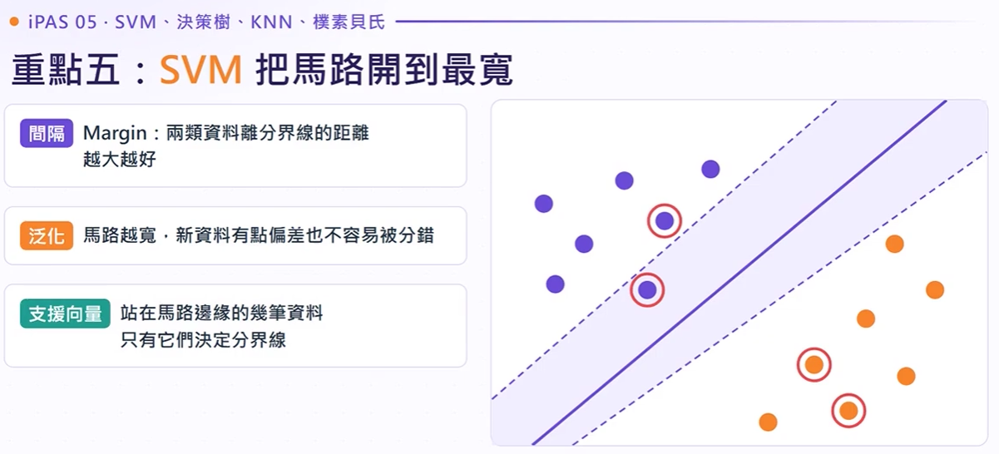
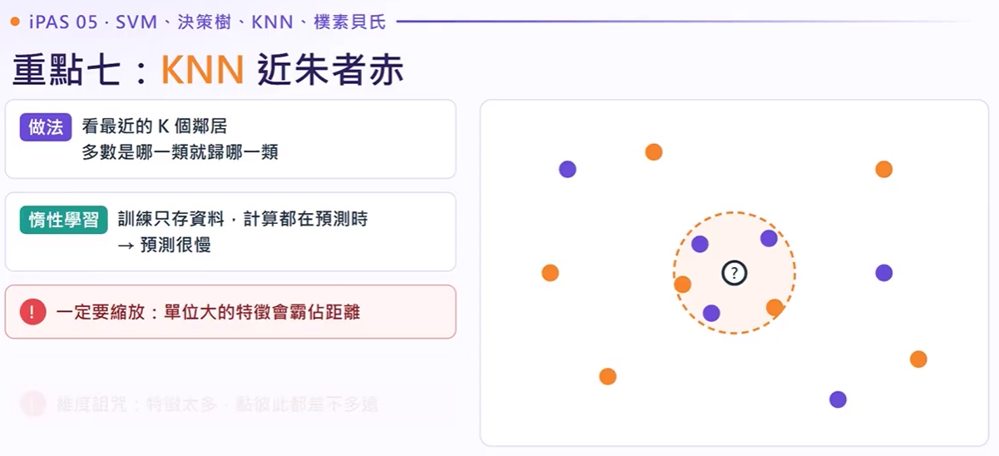

核心大綱：四大分類器本質與考點對比矩陣
第六章後半：四個分類演算法考點地圖
iPAS 考試中最常出現「跨演算法特性對比題」，如「哪些演算法必須先做特徵縮放？」、「哪種演算法天生抗高維維度災難？」請務必熟記本表！
iPAS 必考高頻陷阱：特徵縮放要求
官方真題曾考出：「KNN 和 SVM 在模型訓練前，為什麼必須進行特徵標準化/正規化（Feature Scaling）？」
核心正解：因為二者皆依賴於樣本地理空間中的距離計算（如歐式距離）。若未縮放，數值範圍大的特徵（如年薪數十萬）會完全淹沒數值範圍小的特徵（如年齡 0~100），造成權重失衡。決策樹（按排序切刀）與樸素貝氏（機率統計）則不受影響。
SVM 支援向量機：最大間隔超平面與核技巧
最大化間隔（Margin）
在兩類資料中尋找一條最寬的「馬路」（超平面）。馬路寬度即 Margin，落在馬路邊界關鍵點即為支援向量（Support Vectors），其餘內部點都不會影響這條分界線！
懲罰參數 $C$ 的權衡
$C$ 越大：對錯誤分類容忍極低，Margin 窄，可能產生過擬合（Overfitting）；$C$ 越小：容忍更多誤判點，追求更寬的 Margin 與泛化平滑度。
核函數技巧（Kernel Trick）
原空間不可線性分割時，透過核函數（如 RBF、多項式核）將樣本映射至高維特徵空間，實現線性切割，省去高維度實際內積的龐大算力。
重點五：SVM 把馬路開到最寬（超平面與支援向量）

SVM 互動實驗室：調整 $C$ 懲罰值與 $\gamma$ 觀察邊界與間隔
即時觀察軟間隔（Soft Margin）寬度與支援向量被鎖定的狀態。
支援向量數量：4 個
重點五：SVM 適合什麼、為什麼要先縮放
重點五：學校版生動比喻：走廊開到最寬
SVM 必考公式與核技巧原理
• 超平面幾何間隔 Margin：$\text{Margin} = \frac{2}{\|\mathbf{w}\|}$，因此「最大化間隔」等價於「最小化 $\frac{1}{2}\|\mathbf{w}\|^2$」。
• 常用核函數（Kernel Trick）：高斯徑向基核（RBF Kernel）公式為 $K(\mathbf{x}_i, \mathbf{x}_j) = \exp(-\gamma \|\mathbf{x}_i - \mathbf{x}_j\|^2)$。它隱式地將有限維樣本映射至無窮維 Hilbert 空間，解決極度非線性之分類問題。
決策樹（Decision Tree）：遞迴分支與純度度量
遞迴二元分割（Recursive Splitting）
決策樹由根節點（Root）出發，逐層進行特徵門檻判定（內部節點），直到抵達葉節點（Leaf）產出分類結果。因為每次只對單一軸做直角切割，其決策邊界在二維空間呈現經典的正交階梯狀，具有極佳的業務白盒可解釋性（White-box model）。
不純度指標公式（必背考點）
重點六：決策樹一路問是非題（不純度指標度量）
決策樹不純度即時動態沙盒（Gini & Entropy 計算器）
滑動調整一個葉節點中的類別 A 與類別 B 樣本數，直觀體會純度變化！
重點六：決策樹的優點與弱點（輔導室轉介黑板）
KNN 近鄰演算法：惰性學習與維度詛咒
惰性學習（Lazy Learning）
KNN 在訓練階段完全不訓練任何參數或方程式，只是單純將資料儲存於記憶體中。所有預測耗時均發生在推論階段（計算距離並排序），因此大數據集推論極為緩慢。
關鍵參數 $K$ 值的權衡
• $K=1$ 極易受噪聲孤立點干擾，邊界支離破碎（過擬合）。
• $K$ 過大會包含過多遠處其他群體，使判別模糊化（欠擬合）。通常選奇數以防平手。
維度詛咒（維度災難）
當特徵空間維度暴增（例如 5000 個基因），空間體積指數級膨脹，導致任意兩點之間的歐式距離趨近相同，「最近鄰」喪失幾何區分力！此時必須做降維（如 PCA）。
重點七：KNN 近朱者赤（惰性學習與距離縮放）

KNN 即時空間互動模擬器
在畫布上點擊任意處放置新樣本點，調整 $K$ 觀察鄰域搜尋圈與多數決投票！
重點七：KNN 的 $K$ 怎麼選（過擬合 vs 欠擬合權衡）
樸素貝氏（Naive Bayes）：條件獨立與平滑修正
為什麼叫「樸素（Naive）」？
它做出了極其強烈（甚至違背常理）的假設：給定目標類別下，所有特徵屬性彼此條件獨立。因此複合條件機率可以直接連乘，計算極快，無懼高維文字矩陣。
零機率問題（Zero Frequency）
只要某個關鍵字在訓練集某類別中從未出現（次數為 0），連乘公式中只要有一項為 0，整體後驗機率就會被一票否決變成 0！抹煞其他所有特徵的重要線索。
拉普拉斯平滑（Laplace）
分子加 $\alpha$（通常為 1），分母加上 $\alpha \times K$（類別特徵總數），保證即便未見過的詞彙也能獲得一個微小的非零基礎機率，是 NLP 與垃圾郵件必用技巧。
重點八：樸素貝氏（條件獨立假設與文字分類）
經典垃圾郵件（Spam）分類機率試算器
輸入關鍵字出現次數，觀察貝氏定理如何透過後驗機率判定垃圾郵件，並對比平滑修正差異！
情境：出現「中獎優惠」關鍵字
重點八：零機率問題與拉普拉斯平滑（Laplace Smoothing）
考前速記卡片盒與通關三句話
濃縮四大分類演算法最容易搞混的考點與解題直覺心法。
總結：四大分類演算法最容易搞混對抗表
總結：這集帶走三句話（考前終極心法與口訣精髓）
iPAS 認證科目三：高頻官方試題真題演練
收錄官方公告樣題與影片考點，點選選項立即驗證，並附有詳細解析：
「資訊增益（Information Gain）」用來衡量特徵對於降低分類結果不確定性的貢獻，進而挑選最佳特徵，這項技術主要應用於下列哪一類模型？
生醫研究團隊有一組癌症微陣列晶片資料，包含 200 位病患樣本，但每位病患擁有 5,000 個基因表現特徵（典型高維小樣本）。工程師打算使用分類器預測罹癌風險，下列決策何者最不恰當？
下列關於各分類演算法對「資料特徵縮放（Feature Scaling）」敏感度之敘述，何者正確？
影片微章節互動時間軸與完整逐字稿
點擊時間戳記可直接跳轉 YouTube 原影片播放秒數，亦可透過標籤或搜尋關鍵字即時篩選。
開場試題：資訊增益（Information Gain）核心歸屬演算法
開場先拋出經典題：資訊增益衡量特徵對分類結果不確定性的貢獻，用來挑選特徵，主要用在哪一類模型？
選項包含：遞迴分裂建立規則的決策樹、L1 線性模型、深度神經網路、核函數模型。本集接續上一集回歸篇，將這四個分類演算法一次講透！
重點 5：SVM 支援向量機、超平面與最大間隔（C 與 Gamma）
SVM 旨在尋找一條分界線（超平面），讓兩類資料距離這條線的距離最大，這個距離稱為「間隔（Margin）」，概念就像在兩群人中間開一條最寬的馬路。站在馬路邊緣決定分界線位置的點稱為「支援向量（Support Vectors）」。
間隔寬度為 $2 / \|\mathbf{w}\|$，支援向量為邊緣約束解。馬路越寬，新資料越不容易被誤判，未知資料泛化能力越佳。
• $C$ (懲罰參數)：調大對錯分容忍低，邊界貼合資料易過擬合；調小邊界寬且平滑。
• $\gamma$ (Gamma)：調大單點影響半徑小，邊界曲折。
虛線為邊界 Margin，只有支援向量參與超平面計算。
SVM 實務考題：200人 5,000基因之高維小樣本解法
生醫團隊只有 200 位病患樣本，但每位病患擁有 5,000 個基因表現特徵。這種典型「高維度、小樣本」場景，SVM 表現遠勝於 KNN，因為 SVM 僅依賴邊界附近的支援向量，較不易受維度詛咒影響。
重點 6：決策樹（遞迴分裂、吉尼不純度、熵、資訊增益）
從根節點（Root）出發進行條件判斷，逐步分支，在葉節點（Leaf）產出預測。每次分割的目標是挑選能讓分支後子節點純度最高的特徵與條件。
開場試題官方詳解：四種模型特徵機制剖析
答案確定為：透過遞迴分裂建立規則的決策樹。 逐一檢視其他干擾選項：
- L1 線性回歸（Lasso）：透過 L1 範數懲罰項直接將不重要的特徵權重歸零（特徵稀疏化）。
- 深度神經網路：透過隱藏層的非線性激活函數（如 ReLU）進行特徵萃取。
- 核函數模型（SVM）：透過核技巧將特徵投射到高維空間最大化分類間隔。
重點 7：KNN 惰性學習與維度詛咒（特徵縮放與 K 值選取）
KNN（K-Nearest Neighbors）預測新樣本時，找出空間中距離最近的 K 個鄰居，以多數決方式決定類別。屬於惰性學習（Lazy Learning），訓練階段只存資料，推論階段才算距離。
KNN 依賴歐氏距離，數值未縮放會導致薪水（萬）完全蓋過年齡（十），因此特徵縮放為絕對必要步驟！
維度太高時，空間極為稀疏，所有點與點之間的距離趨於一致，「最近鄰」失去統計意義。
KNN 實務考題：300 維度 50 萬筆資料預測過慢之因應
某電商有 50 萬筆會員資料，特徵維度達 300 維，上線使用 KNN 進行即時推薦時發現反應時間超過 3 秒，嚴重卡頓。如何有效解決？
大幅減少距離運算的特徵維度，同時緩解維度詛咒。
避免每次預測時都對全量 50 萬筆資料做全掃描暴力運算。
重點 8：樸素貝氏（條件獨立假設、零機率與拉普拉斯平滑）
基於貝氏定理，計算在特定特徵條件下屬於某類的後驗機率。「樸素」假設指在給定類別下，特徵之間彼此條件獨立，因此聯合機率可直接連乘，算力消耗極低。
未見過的詞彙條件機率為 0，連乘後會抹殺所有其他關鍵線索。
P = (Count + α) / (Total + α×K)，分子通常 +1，分母加總類別數。
樸素貝氏數值計算例題：40% 垃圾郵件條件機率試算
例題條件：已知所有郵件中垃圾郵件佔 40%（先驗機率 P(Spam) = 0.4）。若垃圾信中出現「中獎」詞彙機率為 0.8，正常信中出現該詞機率僅為 0.1。求收到一封包含「中獎」詞彙的信件，它是垃圾郵件的後驗機率？
貝氏實務考題：促銷詞誤判與資料不平衡對策
系統經常將含有「促銷」字眼的正常商業報價信誤判為垃圾信。原因在於訓練資料集嚴重失衡（垃圾郵件樣本過多，導致先驗機率 P(Spam) 被人為高估）。
全集精華總結：三句必背口訣秒殺 iPAS 分類題
題目若出現「資訊增益、熵、吉尼不純度」，無懸念直接選決策樹！
SVM 與 KNN 只要算幾何距離，必須特徵縮放；決策樹與貝氏免做！
樸素貝氏獨立性假設乘積算得快，遇到零機率問題必用拉普拉斯平滑修正！